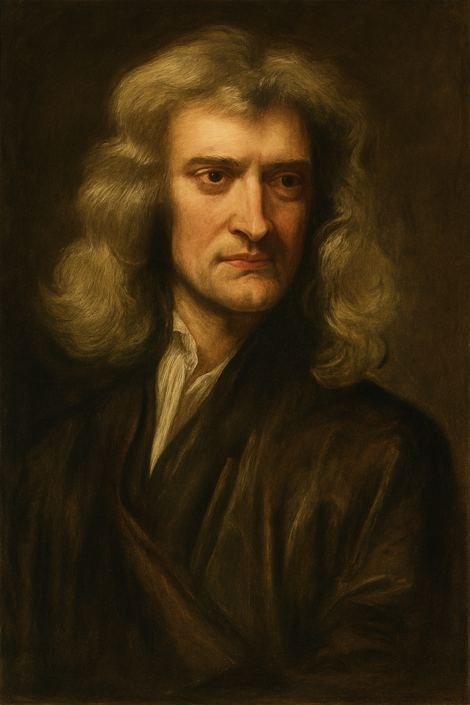

Niccolò Copernico (1473–1543) fu un canonico, matematico e astronomo polacco, considerato il padre della rivoluzione scientifica in ambito astronomico.
Vissuto in un’epoca dominata dal modello geocentrico di Claudio Tolomeo, secondo cui la Terra era immobile al centro dell’universo, Copernico
propose una visione radicalmente diversa: il Sole al centro e i pianeti, inclusa la Terra, che gli ruotano attorno.
La sua opera fondamentale, De revolutionibus orbium coelestium, fu pubblicata nel 1543, anno della sua morte. In essa Copernico descrive
un universo ordinato secondo un sistema eliocentrico, dove la Terra compie due movimenti principali: la rotazione attorno al proprio asse e la rivoluzione
attorno al Sole. La Luna continua a orbitare attorno alla Terra, ma il ruolo centrale della Terra viene drasticamente ridimensionato.
Il suo modello spiegava meglio i moti retrogradi dei pianeti e semplificava notevolmente i calcoli astronomici rispetto al complicato sistema
di epicicli tolemaico. Tuttavia, la teoria non ebbe subito ampia diffusione, anche a causa delle implicazioni religiose e filosofiche.
In particolare, l'idea che la Terra non fosse al centro dell'universo minava profondamente la visione antropocentrica promossa dalla Chiesa cattolica.
Copernico dedicò molti anni alla raccolta di osservazioni e calcoli, temendo le reazioni che la sua teoria avrebbe suscitato.
La pubblicazione avvenne solo grazie all’intervento dell’editore Andreas Osiander, che inserì una prefazione anonima, presentando
l’opera come un’ipotesi matematica anziché una descrizione fisica della realtà.
Nonostante ciò, l’opera gettò le basi per un cambiamento epocale: la cosiddetta “rivoluzione copernicana” modificò per sempre la visione dell’universo e diede inizio all’era dell’astronomia moderna.
Giovanni Keplero (1571–1630) fu un matematico e astronomo tedesco, figura centrale della rivoluzione scientifica.
Profondo sostenitore del modello eliocentrico di Copernico, lo sviluppò ulteriormente introducendo per la prima volta
un modello matematico accurato per descrivere il moto dei pianeti, superando definitivamente l’idea delle orbite circolari.
Keplero lavorò come assistente dell’astronomo danese Tycho Brahe, che aveva raccolto per decenni dati precisissimi
sulle posizioni dei pianeti. Alla morte di Brahe, Keplero ebbe accesso a queste osservazioni, in particolare quelle su Marte,
che si rivelarono decisive per lo sviluppo delle sue tre leggi sul moto planetario.
🔹Prima legge di Keplero: ogni pianeta si muove lungo un’orbita ellittica, con il Sole situato in uno dei due fuochi.
🔹Seconda legge (legge delle aree): la linea immaginaria che unisce un pianeta al Sole copre aree uguali in tempi uguali.
🔹Terza legge: il quadrato del periodo orbitale di un pianeta è proporzionale al cubo della sua distanza media dal Sole
(T² ∝ R³).
Queste leggi rappresentarono una svolta nella comprensione della meccanica celeste. Abbandonarono le antiche concezioni filosofiche
di perfezione delle orbite circolari, introducendo l'ellisse come forma naturale del moto planetario. Le leggi di Keplero
dimostrarono che il sistema copernicano poteva non solo descrivere ma **prevedere** i moti planetari con precisione scientifica.
Keplero fu anche un pensatore mistico e spirituale. Cercava nelle leggi dell’universo un ordine divino, convinto che la matematica
fosse il linguaggio con cui Dio aveva costruito il cosmo. La sua opera più celebre, Harmonices Mundi, è un connubio tra
scienza, musica e teologia.
Nonostante le difficoltà economiche, le guerre religiose del suo tempo e la perdita di famigliari per malattia, Keplero portò avanti
le sue ricerche con instancabile dedizione. Le sue leggi costituirono la base su cui, pochi decenni dopo, Isaac Newton formulò la teoria della gravitazione universale.
Galileo Galilei (1564–1642) è considerato il padre della scienza moderna. Matematico, fisico, filosofo e astronomo, fu il primo
a combinare l’osservazione sperimentale con il metodo scientifico per comprendere i fenomeni naturali.
Il suo contributo all’astronomia è immenso. Sebbene non abbia inventato il telescopio, lo migliorò sensibilmente e lo puntò verso il cielo,
aprendo una nuova era nell’osservazione astronomica. Nel 1609 costruì uno strumento che ingrandiva fino a 30 volte,
e iniziò a scrutare la Luna, i pianeti, le stelle.
Tra le sue scoperte più famose vi sono:
Tutte queste osservazioni confermavano il modello eliocentrico e sfidavano direttamente la cosmologia tolemaica e la dottrina religiosa del tempo.
Nel 1610 pubblicò il Siderius Nuncius (Messaggero celeste), un’opera che lo rese celebre in tutta Europa. Tuttavia, la sua posizione
a favore del copernicanesimo lo mise in rotta di collisione con la Chiesa cattolica.
Nel 1632 pubblicò il Dialogo sopra i due massimi sistemi del mondo, dove difendeva apertamente il modello
Isaac Newton

Isaac Newton (1643–1727) è una delle figure più straordinarie della storia della scienza. Matematico, fisico, astronomo e filosofo naturale,
fu il primo a formulare un quadro teorico completo in grado di spiegare sia i fenomeni terrestri che quelli celesti attraverso leggi universali.
La sua opera più celebre, Philosophiæ Naturalis Principia Mathematica, pubblicata nel 1687, rappresenta una vera pietra miliare della scienza moderna.
In questo trattato, Newton enunciò le
3 Leggi del Moto e la Legge della Gravitazione Universale, unificando meccanica terrestre e astronomia
in un’unica struttura teorica coerente.
Le sue tre leggi del moto sono:
La Legge di Gravitazione Universale stabilisce che ogni corpo nell’universo attrae ogni altro corpo con una forza direttamente proporzionale
al prodotto delle loro masse e inversamente proporzionale al quadrato della distanza che li separa. Questa legge permise per la prima volta
di spiegare con precisione:
Newton mostrò che le stesse leggi fisiche governano l’intero universo, dalla mela che cade all’orbita dei pianeti: un’unificazione concettuale
senza precedenti, che segnò la nascita della fisica classica.
Oltre alla meccanica celeste, Newton contribuì enormemente anche in ottica (dimostrando che la luce bianca è composta da colori) e in matematica
(inventò il calcolo differenziale, parallelamente a Leibniz).
Fu una figura schiva, solitaria e a tratti ossessiva, ma la sua opera segnò il culmine della rivoluzione scientifica iniziata con Copernico
e Galileo. Il suo universo era perfettamente meccanico e prevedibile, governato da leggi matematiche immutabili.
Questa visione dominò la scienza per oltre due secoli, fino all’avvento della relatività e della meccanica quantistica nel Novecento.
Durante il XVIII secolo, l'astronomia visse un periodo di espansione e scoperta, grazie all'uso sempre più diffuso dei telescopi. Una delle scoperte più significative fu quella di Urano, il primo pianeta individuato con l'ausilio di un telescopio. L'astronomo britannico William Herschel lo osservò per la prima volta nel 1781, rivoluzionando la mappa del Sistema Solare. Successivamente, Herschel scoprì anche due delle lune di Urano, Titania e Oberon, nel 1787. Nel 1789, scoprì due nuovi satelliti di Saturno: Mimas ed Encelado, ampliando ulteriormente la conoscenza delle lune del gigante gassoso.
Il XIX secolo fu un periodo di grandi progressi, soprattutto nell'osservazione dei corpi celesti. Nel 1801, Giuseppe Piazzi scoprì Cerere, inizialmente classificato come pianeta, poi come asteroide. Nel 1846, la scoperta di Nettuno confermò l’efficacia dei calcoli teorici. Sempre nel XIX secolo, Friedrich Bessel riuscì a misurare per la prima volta la parallasse di una stella (61 Cygni) nel 1838. L’introduzione della spettroscopia negli anni ’60 permise l’analisi della composizione chimica delle stelle.
Il XX secolo fu una rivoluzione astronomica. Nel 1929, Edwin Hubble scoprì l’espansione dell’universo. Nel 1965, Penzias e Wilson rilevarono la radiazione cosmica di fondo. Nel 1995, Michel Mayor e Didier Queloz individuarono il primo esopianeta, 51 Pegasi b, aprendo la strada alla moderna esplorazione dei mondi extrasolari.
Nel 2015, il progetto LIGO rilevò le onde gravitazionali. Nel 2019, l'Event Horizon Telescope mostrò la prima immagine di un buco nero. Nel 2021, il lancio del James Webb Space Telescope ha aperto una nuova era per l’osservazione del cosmo profondo e degli esopianeti.